MASKLESS LITHO v2.1
operator manualPLANCK INC 마스크리스 리소그래피 장비용 Windows 데스크톱 소프트웨어의 최신 운용 메뉴얼입니다.
이 메뉴얼만 보고도 노광 흐름을 따라갈 수 있게 정리했습니다.
v2.1은 v2.0.10 계열의 GDS Import, UV Keystone, Motorized Focus, manual LED 안정화 패치를 묶은 안정 릴리즈입니다. LED ON은 UV Keystone이 APPLIED (ON) 상태이면 보정 이미지를 먼저 적용하고, 보정이 꺼져 있거나 profile이 없으면 raw 이미지로 DLP를 켭니다.
README.md, ui/main_window.py, ui/setting_window.py, ui/gds_layer_dialog.py와 실제 v2.1 UI 캡쳐를 기준으로 작성했습니다.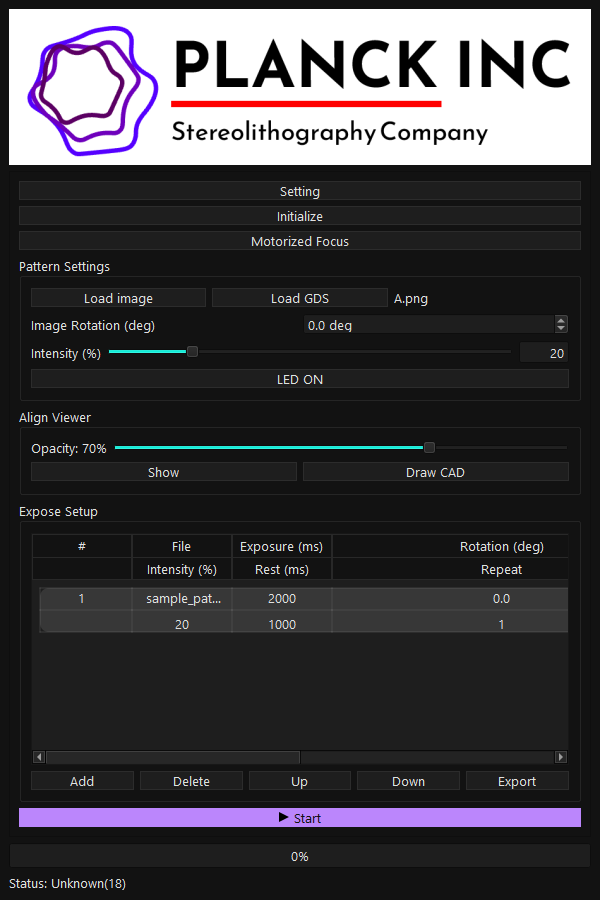
Quick Start
장비 연결부터 첫 노광까지의 표준 절차입니다. 실제 샘플을 올리기 전에는 display, TEST Mode, intensity를 먼저 확인하세요.
dist\maskless_v2_1.exe를 실행합니다.Setting > Display에서 DLP 모니터를 선택하고Apply를 누릅니다.- 장비 없이 UI만 확인할 때는
Setting > Expose > TEST Mode를 켭니다. 실제 노광 전에는 의도한 상태인지 다시 확인합니다. Load image로 PNG/BMP/JPG를 불러오거나Load GDS로 GDS/GDS2를 DLP PNG로 변환합니다.Align Viewer > Show로 카메라 화면 위에 패턴을 띄우고 위치와 크기를 맞춥니다.- 필요하면
Align Wizard또는UV Keystone Calibration으로 정렬/출력 왜곡을 보정합니다. - UV Keystone profile을 사용할 경우
Setting > Align View에서APPLIED (ON)상태인지 확인합니다. Expose Setup > Add로 row를 추가하고 Exposure, Rotation, Intensity, Rest, Repeat를 확인한 뒤Start를 누릅니다.
- DLP 출력 대상이 작업자 모니터가 아니라 실제 DLP display인지 확인합니다.
- Intensity 단위가
%인지, Calibration LUT로 변환된mW/cm²인지 확인합니다. - UV Keystone profile을 적용할지 여부를
Setting > Align View에서 확인합니다. - 문제가 생기면 먼저
Stop을 누르고 black output 복귀를 확인합니다.
Safety
UV/DLP 출력은 샘플과 장비에 직접 영향을 줍니다. v2.1에서는 수동 LED ON, sequence, CAD Expose, UV Keystone 상태를 정확히 확인해야 합니다.
LED ON은 현재 로드된 이미지를 DLP에 표시하고 수동으로 LED를 켜는 기능입니다.- UV Keystone profile이
APPLIED (ON)이면LED ON전에 보정 이미지를 생성합니다. 생성에 실패하면 LED를 켜지 않고 경고 후 중단합니다. - UV Keystone이 꺼져 있거나 profile이 없으면
LED ON은 raw 이미지로 출력합니다. Startsequence와CAD Expose Now도 수동 LED 상태를 먼저 정리하고 안전 조건을 확인합니다.- Anti-vibration 상태에서 긴 수동 LED 출력은 60초 과열 보호가 동작할 수 있으므로 필요한 시간만 사용합니다.
- Sequence 실행 중, CAD Expose 진행 중, manual LED ON 중에는 Motorized Focus 실행이 차단됩니다.
- GDS Import는 sequence 실행 중이거나 manual LED ON 상태이면 차단됩니다.
- Draw CAD는 이미지가 로드되어 있고, DLP display가 설정되어 있으며, Align View가 열려 있어야 합니다.
- UV Keystone Calibration은 선택 monitor가 1920x1080 DLP 해상도와 맞지 않으면 시작하지 않습니다.
Install/Run
릴리즈 exe, 개발 환경 실행, 빌드 명령, Motorized Focus 내부 모드 실행을 구분합니다.
cd C:\GitProjects\MASKLESSLITHO
dist\maskless_v2_1.exev2.1 배포 파일명은 maskless_v2_1.exe입니다. 배포 zip에는 이 exe 하나만 포함하는 구조를 기준으로 합니다.
cd C:\GitProjects\MASKLESSLITHO
.\venv64\Scripts\python.exe main.py처음 실행하는 PC에서는 requirements 설치가 필요합니다. GDS Import를 사용하려면 gdstk가 설치되어 있어야 합니다.
python -m venv venv64
.\venv64\Scripts\python.exe -m pip install -r requirements.txt.\venv64\Scripts\python.exe build_exe.pyMotorized Focus는 별도 exe를 배포하지 않고 다음 내부 모드로 실행됩니다.
maskless_v2_1.exe --motorized-focusMain Window
메인 창은 장비 초기화, 패턴 입력, 정렬, CAD 작성, 노광 sequence 실행을 한 화면에서 진행하도록 구성되어 있습니다.
| 영역 | 무엇을 하나 | v2.1에서 확인할 점 |
|---|---|---|
Setting | General, Display, Align View, Expose 설정 | UV Keystone Enable/Disable, TEST Mode, DLP display |
Initialize | DLP controller Power ON 초기화 | 장비 없는 PC는 TEST Mode 확인 |
Motorized Focus | Focus 전용 창 실행 | 노광/수동 LED 중 실행 차단 |
Pattern Settings | 이미지/GDS 로드, 회전, intensity, 수동 LED 출력 | LED ON은 UV Keystone ON/OFF 상태에 따라 보정 또는 raw 출력 |
Align Viewer | 현미경/카메라 화면 기준 overlay 정렬 | Draw CAD와 Align Wizard 진입점 |
Expose Setup | 노광 sequence row 추가/편집/실행 | Calibration ON/OFF에 따라 intensity 단위가 달라짐 |
Pattern Settings
노광할 패턴을 불러오고 rotation, intensity, 수동 LED 출력까지 관리하는 영역입니다.
Load image: PNG/BMP/JPG 패턴 이미지를 불러옵니다.Load GDS: .gds/.gds2를 GDS Import Settings에서 crop/layer 선택 후 DLP PNG로 변환합니다.Image Rotation (deg): 로드된 이미지의 회전값입니다.Intensity (%): DLP LED 출력 강도입니다. Calibration LUT가 켜지면 lens 기준 광량 단위로 변환될 수 있습니다.LED ON: 현재 이미지를 DLP에 표시하고 수동 LED 출력을 시작합니다. UV Keystone이APPLIED (ON)이면 보정 이미지를 적용하고, OFF 또는 no profile이면 raw 이미지로 출력합니다.- LED가 켜지면 버튼 텍스트가
LED OFF로 바뀌며, 다시 누르면 출력과 상태가 정리됩니다.
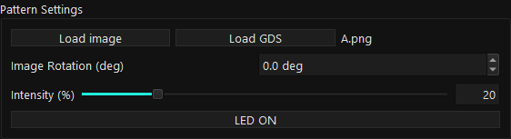
- 일반 이미지면
Load image, layout이면Load GDS를 선택합니다. - 파일명이
N/A에서 실제 파일명으로 바뀌었는지 확인합니다. - 회전이 필요하면
Image Rotation (deg)값을 조정합니다. - Intensity 값을 확인합니다.
- 수동 출력이 필요하면
LED ON을 사용합니다. 보정 적용 여부는Setting > Align View의 UV Keystone 상태가 결정합니다.
Manual LED ON
현재 패턴을 DLP에 표시한 뒤 수동으로 LED를 켜는 기능입니다. v2.1에서는 UV Keystone 적용 여부와 상태 표시가 안정화되었습니다.
| 상태 | 출력 의미 | 사용 전 확인 | 실패 시 동작 |
|---|---|---|---|
UV Keystone: APPLIED (ON) | 보정 이미지를 생성한 뒤 DLP에 표시하고 LED를 켭니다. | profile 해상도와 DLP display 설정 | 보정 이미지 생성 실패 시 LED ON 없이 경고 후 중단 |
NOT APPLIED 또는 no profile | 로드된 raw 이미지를 그대로 DLP에 표시하고 LED를 켭니다. | 샘플 위치, intensity, TEST Mode 상태 | current 설정 또는 LED ON 실패 시 상태 원복 |
- 버튼을 누르면 먼저
Status: Manual LED starting...이 표시됩니다. - 실제 LED ON이 성공하면
Status: Manual exposing... 0.000s부터 0.1초 단위로 시간이 증가합니다. - Anti-vibration이 켜져 있으면 fan을 먼저 끄고 약 500ms 뒤 LED ON을 시도합니다.
- 수동 LED 출력 중에는 Motorized Focus와 GDS Import 같은 충돌 가능한 작업이 차단됩니다.
Keystone Preview / Expose 버튼이 없습니다. UV Keystone 적용 여부는 Setting > Align View의 profile 상태와 Enable/Disable 버튼으로 관리합니다.Motorized Focus
Initialize 아래의 Focus 런처입니다. v2.1에서도 단일 exe 내부 모드 구조를 유지합니다.
- 실행 위치: 메인 창
Initialize바로 아래Motorized Focus - 내부 실행:
maskless_v2_1.exe --motorized-focus - 배포 시 별도
Motorized_Focus.exe가 필요하지 않습니다. - Sequence, CAD Expose, manual LED ON 중에는 장비 충돌 방지를 위해 실행이 차단됩니다.
- 이미 Focus 창이 실행 중이면 중복 실행하지 않고 기존 실행 상태를 안내합니다.
Align Viewer
카메라/현미경 화면 위에 패턴 overlay를 띄워 위치, 크기, 투명도, CAD 작성 기준을 맞추는 영역입니다.
Opacity: 카메라 화면을 보면서 overlay 투명도를 조정합니다.Show: Align View를 표시하거나 숨깁니다.Draw CAD: 현재 Align View와 같은 이미지 평면을 기준으로 CAD View를 엽니다.- 창 이동/크기 조절로 현미경 화면 위 패턴 위치를 맞춥니다.
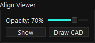
- Align View는 화면 표시 정렬입니다. 실제 DLP 출력 왜곡 보정은 UV Keystone이 담당합니다.
- Draw CAD를 열기 전에는 이미지 로드, DLP display 설정, Align View 표시가 필요합니다.
- Draw CAD 작업 전에는 Align View가 DLP display 위에 떠 있지 않도록 위치를 확인합니다.
Align Wizard
v2.1의 Align Wizard는 UV Keystone profile 측정/가져오기/내보내기를 먼저 보여주고, 수동 1/2/4 Point Align은 Advanced 아래에 접혀 있습니다.
UV Keystone Calibration: full-field UV Keystone profile 측정 wizard를 엽니다.KEYSTONE CALIBRATION: 현재 profile 상태를 보여줍니다.Import: 다른 PC에서 만든.maskkeystoneprofile을 가져와 활성화합니다.Export: 현재 활성 profile을 파일로 내보냅니다.Advanced: 1/2/4 Point Align 수동 정렬 controls를 펼칩니다.
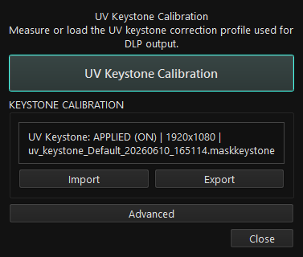
Advanced를 펼치면 기존 semi-auto align 기능을 사용할 수 있습니다. 현미경/카메라 화면과 Align View에서 같은 기준점을 순서대로 찍고, Preview Calculate 후 Apply합니다.
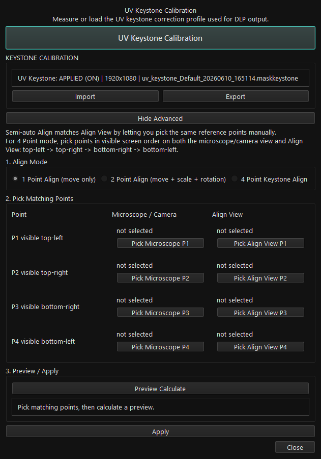
UV Keystone Calibration
실제 DLP에서 조사되는 UV 패턴 자체를 역보정하는 full-field 보정 기능입니다.
- Align View가 없어도 DLP display와 카메라/현미경 화면 클릭만으로 측정합니다.
- Step 1/2에서는 outer 4점을 먼저 측정해 global correction 기준을 잡습니다.
- Step 2/2에서는 나머지 13개 fine point를 측정합니다.
- 각 visible UV point는 4회 클릭합니다.
- 완료 후
.maskkeystoneprofile이 저장되고 ON 상태로 활성화됩니다. - 시작 전 선택된 DLP monitor가 1920x1080 native인지, main/camera monitor와 DLP monitor native 해상도가 같은지 확인합니다.
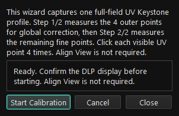
Setting > Display에서 1920x1080 DLP monitor를 선택합니다.- Windows Display Settings에서 main/camera monitor와 DLP monitor 해상도 및 배율을 맞춥니다.
Align Wizard > UV Keystone Calibration을 엽니다.Start Calibration을 누릅니다.- DLP에 표시되는 기준점을 카메라 화면에서 찾아 4회 클릭합니다.
- 17점이 끝나면 corrected verification pattern이 DLP에 표시됩니다. 안전을 위해 LED output은 OFF 상태로 유지됩니다.

UV Keystone: NOT APPLIED | no profile: profile이 없습니다.UV Keystone: APPLIED (ON) | 1920x1080 | file.maskkeystone: profile이 있고 출력 보정이 켜져 있습니다.UV Keystone: NOT APPLIED (OFF) | ...: profile은 있지만 보정 적용이 꺼져 있습니다.Enable UV Keystone은 저장된 active profile을 다시 켭니다.Disable UV Keystone은 profile을 삭제하지 않고 적용만 끕니다.- 수동
LED ON, sequence, CAD Expose Now는 이 상태값을 기준으로 보정 적용 여부를 결정합니다.
GDS Import
v2.0.10.4 이후 GDS Import는 단순 layer 선택이 아니라 interactive crop frame을 조정하는 설정창으로 바뀌었습니다.
Cell,polygons: 선택된 GDS cell과 polygon 수입니다.GDS bounds,GDS size,center: 실제 layout 치수입니다.DLP frame: 현재 CAD scale 기준 1920x1080 DLP frame이 실제 몇 um 영역인지 표시합니다.- 흰색 박스: 선택 layer의 GDS bounds입니다.
- 노란색 박스: DLP로 crop될 frame입니다.
Frame check: 현재 frame 안에 geometry가 들어오는지와 예상 visible span을 알려줍니다.
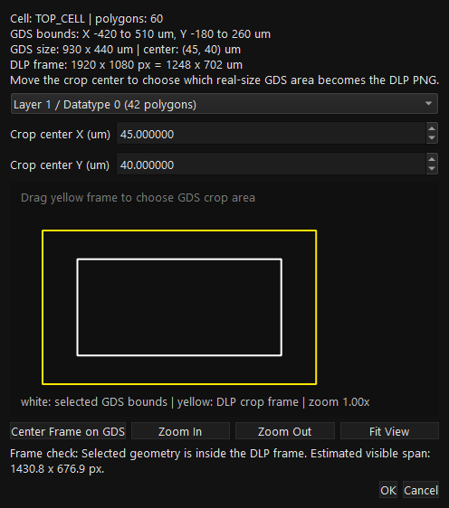
- 현재 렌즈의 CAD scale profile을 저장합니다.
Setting > Display에서 DLP display를 적용합니다.Load GDS를 누르고 .gds/.gds2 파일을 선택합니다.- layer/datatype을 선택합니다.
- 노란 DLP crop frame을 마우스로 드래그하거나
Crop center X/Y (um)값을 입력합니다. Zoom In,Zoom Out,Fit View로 preview를 보기 좋게 조정합니다.Center Frame on GDS로 frame을 현재 layer 중심에 맞출 수 있습니다.Frame check가 geometry 포함 상태를 표시하면OK를 눌러 DLP PNG로 변환합니다.
No selected GDS geometry inside the current DLP frame.: 노란 frame 안에 선택 layer 도형이 없습니다. frame을 드래그하거나 crop center를 조정합니다.Geometry intersects the frame but may be smaller than one pixel.: scale이 너무 거칠 수 있습니다. CAD scale을 더 세밀하게 설정합니다.Selected GDS geometry is outside the DLP area...: scale/origin/crop center를 다시 확인합니다.Selected GDS geometry produced no visible pixels.: layer/datatype, crop frame, scale을 다시 선택합니다.
Draw CAD
Align View와 같은 이미지 평면 위에서 도형을 직접 작성하고, DLP PNG 또는 .maskcad 문서로 저장하는 기능입니다.
Select: 도형 선택, 이동, handle 편집Rect,Ellipse,Line,Polyline,Polygon: 도형 작성Measure: 거리와 각도 측정. 노광 결과에는 포함되지 않습니다.Grid Snap: 점을 지정한 um grid에 맞춥니다.W um,H um,Stroke um: 실제 치수와 선폭을 지정합니다.
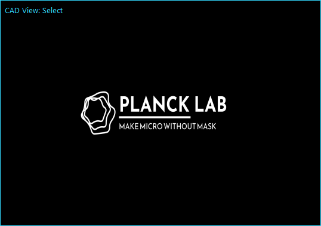
- 이미지가 먼저 로드되어 있어야 합니다.
- DLP display가 설정되어 있어야 합니다.
- Align View를
Show로 연 상태여야 합니다. - Align View를 DLP display 위가 아닌 작업자 화면으로 옮겨야 합니다.
- 출력 전 현재 렌즈의 scale profile을
Save Scale로 저장합니다.
CAD Output
Draw CAD 결과를 저장, PNG export, Pattern Settings 적용, 즉시 노광으로 이어주는 하단 controls입니다.
Save CAD: 편집 가능한.maskcad문서를 저장합니다.Load CAD: 저장된.maskcad를 다시 엽니다.Export PNG: DLP 해상도 PNG와 paired.maskcad를 저장합니다.Apply: 생성된 PNG를 메인 Pattern Settings에 로드합니다.Expose Now: 확인 후 CAD 결과를 1회 노광합니다.Include Base Image: 기존 이미지 위에 CAD 도형을 합쳐 output을 만듭니다.
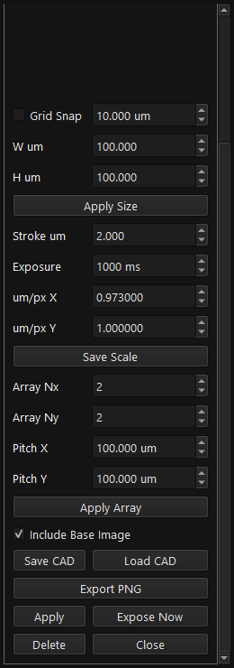
Expose Setup
여러 패턴을 순서대로 노광하기 위한 sequence table입니다.
Add: 현재 loaded pattern을 sequence에 추가합니다.Delete: 선택 row를 삭제합니다.Up/Down: row 순서를 변경합니다.Export: sequence list를 내보냅니다.Start,Next,Stop: sequence 실행/진행/중단입니다.- 컬럼: File, Exposure (ms), Rotation (deg), Intensity, Rest (ms), Repeat
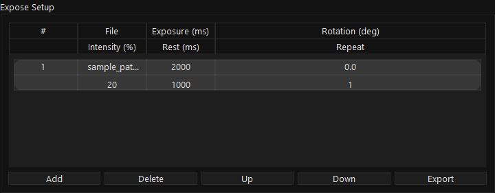
- Start 전에는 모든 row의 Exposure, Intensity, Repeat, Rest를 다시 확인합니다.
- UV Keystone 보정 실패는 black fallback으로 숨기지 않고 LED ON 전 안전 중단됩니다.
- setup이 lock된 상태에서는 임의 편집을 피하고, 필요한 경우 Stop 후 수정합니다.
Calibration LUT
렌즈별 LUT를 불러와 intensity 입력을 실제 광량 기준으로 변환하는 기능입니다.
Setting > Expose를 엽니다.Load로 LUT file을 불러옵니다.Calibrationcheckbox를 켭니다.- Pattern Settings에 lens dropdown이 나타나면 사용할 lens를 선택합니다.
- Expose Setup의 intensity 단위가 현재 Calibration 상태와 일치하는지 확인합니다.
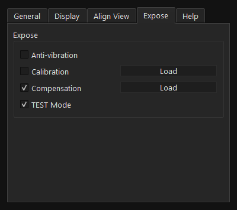
Expose 탭입니다. Calibration, Compensation, TEST Mode가 있습니다." loading="lazy">Compensation
Compensation mask를 로드해 출력 이미지에 보정 mask를 적용하는 기능입니다.
- 위치:
Setting > Expose Compensation: compensation mask 적용 ON/OFFLoad:.maskcompensation image를 불러옵니다.- Calibration LUT는 광량 변환, Compensation은 이미지 mask, UV Keystone은 위치 왜곡 보정입니다. 세 기능의 목적을 구분해서 사용합니다.
Settings
장비 제어, display 선택, Align View/UV Keystone, 노광 보정, TEST Mode를 탭별로 관리합니다.

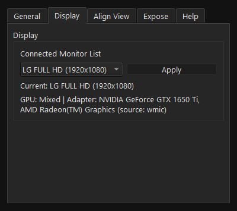
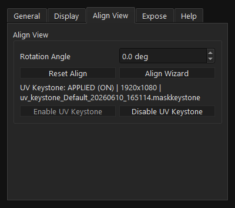
Legacy DLP
구버전 PDC05 DLP controller를 사용할 때만 켜는 호환 모드입니다.
- 위치:
Setting > General > Use Legacy PDC05 - 기본값은 modern DLP controller mode입니다.
- 노광 중에는 DLP mode를 변경하지 않습니다. 먼저 Stop으로 출력 상태를 정리합니다.
- Legacy mode에서 지원하지 않는 기능은 제한될 수 있습니다.
TEST Mode
장비 없이 UI flow, 메뉴얼 캡쳐, sequence 조작을 검증하기 위한 모드입니다.
Setting을 엽니다.Expose탭으로 이동합니다.TEST Mode를 켭니다.- 이미지 로드, GDS Import, Align View, Draw CAD, Expose Setup 흐름을 확인합니다.
- 실제 노광 전에는 TEST Mode가 의도한 상태인지 반드시 다시 확인합니다.
Data Paths
설정, 로그, CAD/GDS output, UV Keystone profile 위치입니다.
| 항목 | 위치 | 설명 |
|---|---|---|
| Config | %USERPROFILE%\.maskless_v2\config\config.json | Display, LUT, CAD scale, UV Keystone 상태 |
| LUT copy | %USERPROFILE%\.maskless_v2\config\lut.dat | Calibration LUT copy |
| Compensation | %USERPROFILE%\.maskless_v2\config\compensation.mask | Compensation image copy |
| Logs | %USERPROFILE%\.maskless_v2\logs\ | app_info.log, app_error.log |
| CAD/GDS PNG | %USERPROFILE%\.maskless_v2\cad\ | CAD output, GDS 변환 PNG 기본 위치 |
| UV Keystone | %USERPROFILE%\.maskless_v2\keystone\*.maskkeystone | full-field correction profile |
Troubleshooting
문제가 생기면 Stop, display, TEST Mode, UV Keystone 상태, scale profile, 로그를 순서대로 확인합니다.
| 증상 | 가능한 원인 | 해결 |
|---|---|---|
| DLP에 출력이 안 나옴 | Display 미설정, TEST Mode, 장비 연결 문제 | Setting > Display Apply, TEST Mode 상태, 로그 확인 |
| LED ON에서 보정이 적용되지 않음 | UV Keystone OFF, profile 없음, profile 해상도 불일치 | Setting > Align View에서 APPLIED (ON) 상태와 1920x1080 profile 확인 |
| LED ON이 UV Keystone 경고 후 중단 | 보정 image 생성 실패, profile 해상도 불일치 | DLP 1920x1080, profile 상태, app_error.log 확인 |
| GDS 변환이 빈 PNG | crop frame 밖에 geometry가 있음, scale이 맞지 않음 | GDS Import Settings에서 노란 frame 이동, Frame check 확인 |
| Draw CAD가 열리지 않음 | 이미지 미로드, DLP display 미설정, Align View 미표시 | Load image, Setting > Display, Align Viewer > Show 순서 확인 |
| Motorized Focus가 열리지 않음 | sequence/CAD/manual LED 실행 중 | Stop 또는 LED OFF 후 다시 실행 |
| Intensity 단위가 예상과 다름 | Calibration LUT ON/OFF 상태 | Setting > Expose의 Calibration과 lens 선택 확인 |
Release Notes v2.1
이 메뉴얼에 반영한 최신 변경사항입니다.
- 릴리즈 빌드:
maskless_v2_1.exe - v2.0.10 계열 핫픽스를 v2.1 안정 릴리즈로 통합
LED ON은 UV Keystone이 활성화되어 있으면 보정 이미지를 적용하고, 비활성 상태이면 raw 이미지로 출력- 수동
LED ON직후Manual LED starting..., 실제 LED ON 성공 후Manual exposing... 0.000s상태 표시 - UV Keystone 보정 이미지 생성 실패 시 LED ON 없이 경고 후 중단
- UV Keystone Calibration 시작 전 DLP monitor와 main/camera monitor native 해상도 guard 강화
- GDS Import Settings에 interactive DLP crop frame, crop center X/Y, Zoom In/Out, Fit View, Center Frame on GDS 추가
- UV Keystone 상태를
APPLIED (ON)/NOT APPLIED (OFF)로 표시 Enable UV Keystone/Disable UV Keystone으로 profile 삭제 없이 적용 상태 전환- 일반 사용자 화면에서
Clear UV Keystone제거 - Align Wizard 기본 화면을 UV Keystone Calibration, Import, Export 중심으로 정리하고 수동 Align은 Advanced로 이동